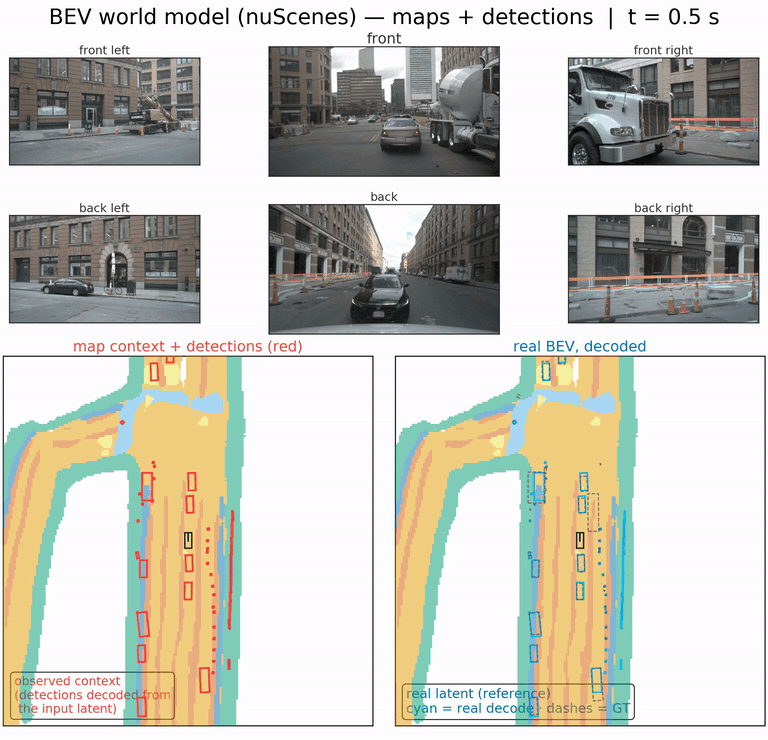
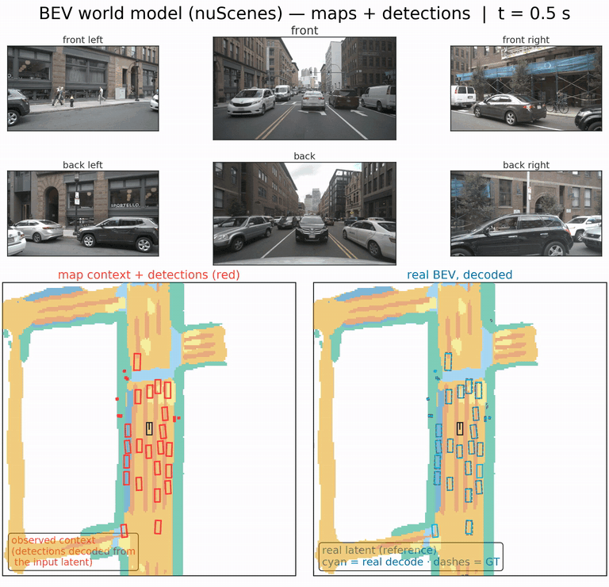
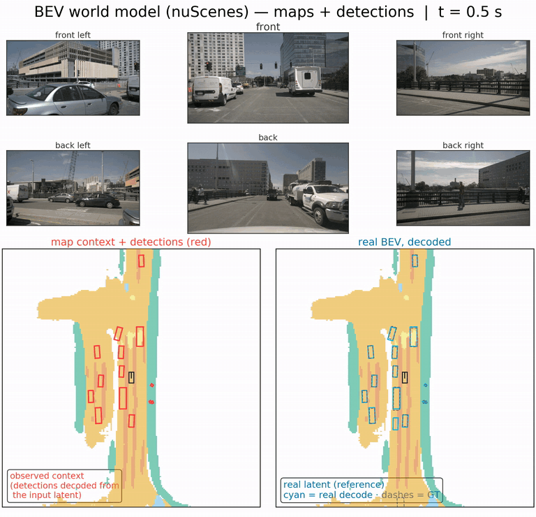
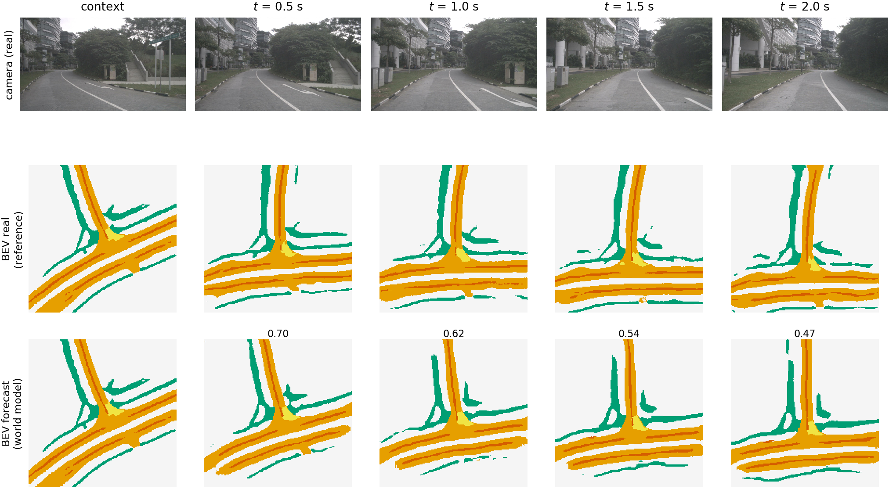

A compact Transformer forecasts the next fused bird's-eye-view latent of a frozen BEVFusion stack 0.5 s ahead from three preceding latents — and the stack's original frozen heads decode the forecast. Forecast quality lands between persistence and the real-future reference for both map segmentation and 3D detection — a modular, view-consistent future estimate for existing vehicle stacks, without retraining the perception system (6M parameters, 4.4–11.5 ms per step on a TITAN RTX).
Demonstrations
Interactive showcase — choose a scene
Plate I — the world model anticipates the scene

Construction street — lane-blocking work zone; drift ratio 1.38 (slight motion over-shoot); map mIoU 0.90 → 0.71 within the first 4 s; detections matched up to 11/19 GT-class vehicles < 2 m.
Plate II — dense traffic

Busy intersection — oncoming + parked traffic and pedestrians; drift ratio 0.98 (near-perfect motion tracking); matched 17/47 at k = 5.
Plate III — speed

Fast street — the fastest scene: slight overshoot (drift ratio 1.72) honestly reflects the speed-extrapolation limit.
Plate IV — waiting scenes matter too

Pedestrian crossing — copy-dominant scene (ᾱ 0.03): the ego waits while a crowd crosses; map-only display — everything shown is decoded, nothing is LiDAR/boxes.
Plate V — the copy/predict mechanism

Gate-α drive — maximum-gate scene (ᾱ = 0.71) anchoring the paper's copy/predict story; map-only pure display (no LiDAR/boxes): the forecast follows the moving road structures while persistence freezes (mIoU 0.70 → 0.38 by 3 s).
Plate VI — publication style

Paper filmstrip — context + four rollout steps, as printed in the paper's teaser.
Evaluation
Results — full validation, against nuScenes annotations
| Task / metric | Persistence | Forecast (WM) | Real latent |
|---|---|---|---|
| Map segmentation (mIoU) | 0.4647 | 0.5898 | 0.6295 |
| 3D detection (mAP) | 0.1696 | 0.3752 | 0.6858 |
† best detection configuration (two-seed mean). The frozen heads decode both forecasts and real latents — the two pipelines never mix numbers.
How the forecast decays with horizon
solid black = forecast (world model) · dashed gray = naive persistence · dotted = ego-compensated persistence. Aggregate rollout (4,915 validation windows, the paper's protocol): proxy mIoU above naive and ego-compensated persistence at every measured step (+0.067 / +0.035 mIoU at 0.5 / 2.0 s; the dotted baseline spans 0.5–2.0 s because the ego-warp protocol measured four steps). Scene-level decay can dip below the compensated baseline at long horizons — the claim rests on the aggregate. In the GIFs, the orange curve is the shown scene's own decay against these same aggregate curves.
Artifacts
Paper & code
Preprint/code links follow at publication (double-blind). The evaluated perception stack builds on the public BEVFusion model (Apache-2.0); demo media come from the nuScenes validation split under its research terms.
BibTeX will be added at publication; until then the anonymous review version citing this page as supplementary material suffices.